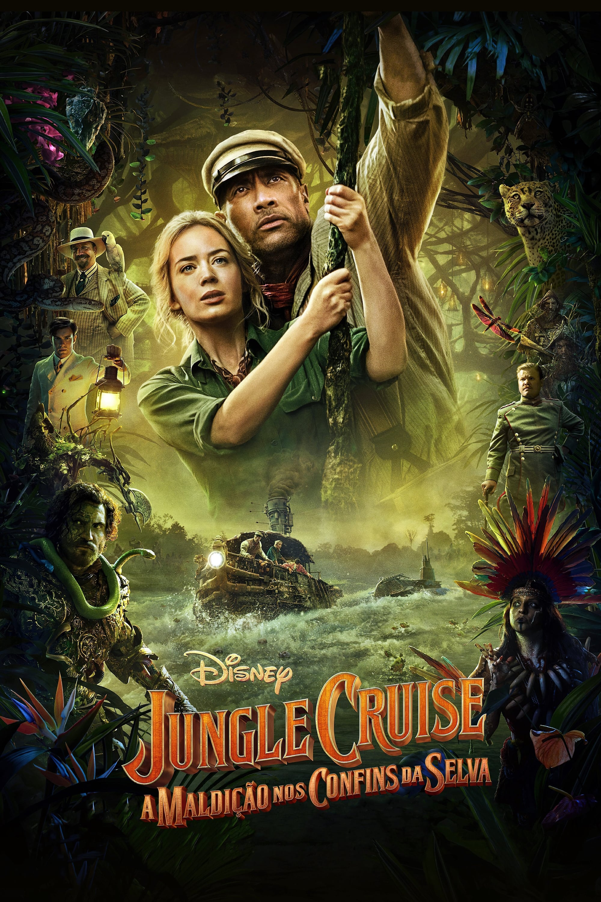

Viúva Negra

Lançamento: 2021
Imdb: 6,9/10 
Sinopse: Natasha Romanoff "Viúva Negra" precisa confrontar partes de sua história quando surge
uma conspiração
perigosa ligada ao seu passado. Perseguida por uma força que não irá parar até derrotá-la, Natasha terá
que lidar com sua antiga vida de espiã, e também reencontrar membros de sua família que deixou para trás
antes de se tornar parte dos Vingadores.
Jungle Cruise

Lançamento: 2021
Imdb: 7,9/10
Sinopse: Frank trabalha como capitão de um barco em uma atração turística totalmente fantasiosa.
Quis o destino que suas verdadeiras habilidades fossem colocadas à prova. Isso acontece quando ele
conhece Lily, uma exploradora que não mede consequências para dar andamento em suas investigações.
Quando ela e o irmão contratam Frank para comandar a embarcação numa expedição de verdade, em busca de
um misterioso segredo, os perigos que os aguardavam eram mais reais do que podiam imaginar.
Velozes & Furiosos 9

Lançamento: 2021
Imdb: 5,5/10
Sinopse: Frank trabalha como capitão de um barco em uma atração turística totalmente fantasiosa.
Quis o destino que suas verdadeiras habilidades fossem colocadas à prova. Isso acontece quando ele
conhece Lily, uma exploradora que não mede consequências para dar andamento em suas investigações.
Quando ela e o irmão contratam Frank para comandar a embarcação numa expedição de verdade, em busca de
um misterioso segredo, os perigos que os aguardavam eram mais reais do que podiam imaginar.
Space Jam: Um Novo Legado

Lançamento: 2021
Imdb: 4,3/10
Sinopse: O superastro do basquete LeBron James se junta à gangue Looney Tunes para derrotar o
Goon Squad e salvar seu filho.